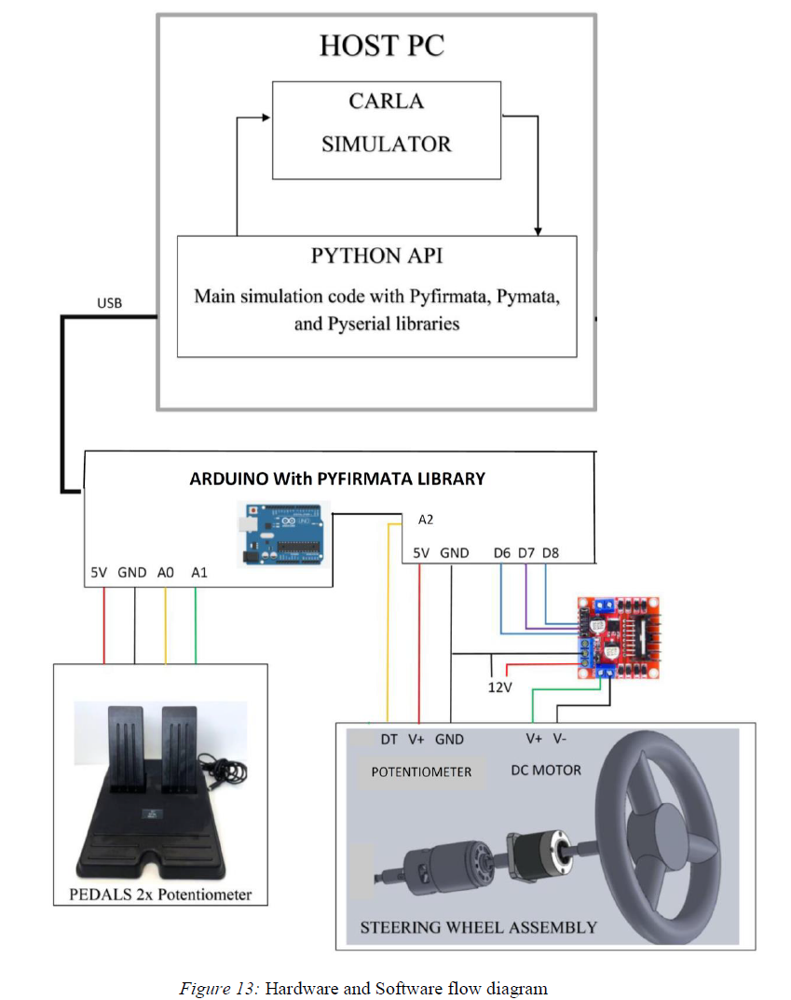

GeeKee CeeBee
Welcome to GeeKee CeeBee's Page: House of Mechatronics
__________________________________________________________________________________________________________________________________
Lane Keeping Assist System Using Steering Wheel
and CARLA Simulator

Demostration video
__________________________________________________________________________________________________________________________________
Typical Lane Keeping Assist System

__________________________________________________________________________________________________________________________________
CARLA Driving Simulator
__________________________________________________________________________________________________________________________________
MATLAB - Vehicle Lateral and Logitudinal Controller
__________________________________________________________________________________________________________________________________
Steering Wheel Construction and CARLA Communication

__________________________________________________________________________________________________________________________________
Controllers
__________________________________________________________________________________________________________________________________
RESULTS- Vehicle Longitudinal and Lateral Controller
__________________________________________________________________________________________________________________________________
RESULTS- Steering Wheel and Pedals Testing with CARLA
__________________________________________________________________________________________________________________________________
CONCLUSION - Summary and Future Work
__________________________________________________________________________________________________________________________________
REFERENCES
__________________________________________________________________________________________________________________________________